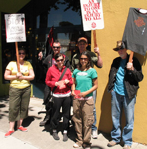
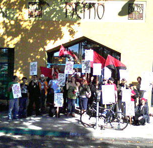

Submitted on Wed, 11/14/2007 - 4:42pm
 Recyclers held a stop work rally to press contract demands on Thursday, November 8th, at recycling facilities in Berkeley. Thirty-five or so workers from two Berkeley recycling operations are in the midst of renegotiating contracts. At “curbside”, recycling trucks go out every week day morning to pick up residential recycling. Across the way at “the Buyback,” residential recycling from the trucks plus drop-off recycling is sorted by twenty workers. All workers are members of the IWW. Both union contracts expire on December 31st, 2007. During the rally workers from both shops stepped up and spoke about the need for unity, participation and solidarity in order to win their demands. Demands are not the same at both shops. However, workers at both shops are calling for a five dollar an hour wage increase across the board. This is a serious demand.
Recyclers held a stop work rally to press contract demands on Thursday, November 8th, at recycling facilities in Berkeley. Thirty-five or so workers from two Berkeley recycling operations are in the midst of renegotiating contracts. At “curbside”, recycling trucks go out every week day morning to pick up residential recycling. Across the way at “the Buyback,” residential recycling from the trucks plus drop-off recycling is sorted by twenty workers. All workers are members of the IWW. Both union contracts expire on December 31st, 2007. During the rally workers from both shops stepped up and spoke about the need for unity, participation and solidarity in order to win their demands. Demands are not the same at both shops. However, workers at both shops are calling for a five dollar an hour wage increase across the board. This is a serious demand.
Submitted on Wed, 10/31/2007 - 7:55pm
 . . .but your continued solidarity is essential!
. . .but your continued solidarity is essential!
What you can do to support the Shattuck Union:
(1) Email the owner, Mark Cuban and tell him to respect workers rights - Mark Cuban's website where you can contact him is blogmaveric.com
(2) Email the company and demand better working conditions: <customerservice@landmarktheaters.com>
(3) Join the IWW and organize your theater. For information about organizing, please visit this page.
(4) Visit the Shattuck Cinema, in Berkeley, and tell the workers you support them.
(5) Contact the Bay Area IWW and ask us for further ideas for providing solidarity and support.
Submitted on Fri, 10/19/2007 - 4:40pm
------------------------------------------
PLEASE FORWARD WIDELY
------------------------------------------
 Today, owners of Metro Lighting and Crafts filed restraining order papers against fired IWW member as another attempt at breaking solidarity and picket lines. The restraining order sites an event that took place in May 2007 and requires that Gabe W. not be allowed to meet with fellow workers (even the 6 workers currently on strike!) and denies him the right to picket the store which fired him for union organizing.
Basically, this is another underhanded attempt by the owners to break union solidarity and try to stem lost business from the pickets.
Submitted on Tue, 10/09/2007 - 12:48am
The San Francisco Bay Area Branch was out in full force this Saturday on the picket line in solidarity with striking workers at Metro Lighting, Berkeley's now infamously "green" lighting business.
Highlights included songs, chants, lots of honking and the owner, Lawrence Grown, posting a profile of a sociopath in the window. (We assume that he was warning customers of his presence!!!) Many customers chose not to cross the picket line and were directed to other Berkeley lighting businesses, but those that dared to cross the picket line were loudly booed and resorted to leaving shamefully out the back door.
Workers at Metro Lighting are striking over the unfair labor practices of the owners, Lawrence and Christa Grown, who last month fired one of their workers for labor organizing and whistle blowing over unsafe working conditions. They are demanding that all union workers be rehired with back wages and a pay raise for the retail workers who make almost half as much as their co-workers in the assembly shop in the back.
Please come out this Saturday in support of our fellow workers at Metro Lighting from noon to five. The business is located at 2121 San Pablo Ave. in Berkeley just south of University. For those who cannot attend, please make sure to call them at 1-888-METRO20 or email them at info@metrolighting.com and let them know that you will be taking your business elsewhere.
Submitted on Tue, 09/25/2007 - 10:58pm
Union workers at Metro Lighting are resuming picketing today as they strike over the company's unfair labor practices. One union worker was fired last week for both union organizing and raising concerns over workplace exposure to toxic chemicals. The other workers are striking over the company's repeated violations of federal and state labor law and are demanding that all union workers be allowed to return to work.
Fired worker Gabe W. describes the behavior of Metro Lighting owners Lawrence and Christa Grown: "In the process of organizing, the boss made the environment very hostile. He would not negotiate on any terms and started retaliating from that point on. He hired union-busting attorneys, started harassing us at work and started surveillance of us. Our working conditions changed and the employee manual was re-written 3 or 4 times since we started organizing. New rules were made up, our hours were changed, our health care was cut."
Metro Lighting workers have been organizing with the Industrial Workers of the World, or IWW, and are fighting for a sustainable wage for all workers, safe working conditions and an end to the age discrimination that has resulted in thousands of dollars in lost wages to one worker in his 60s.
Metro Lighting owners have shown no willingness to negotiate with the union employees. In an attempt to crush the morale of the union workers, they locked them out for over three weeks and claimed to have closed the business due to a "family emergency". The business was clearly open, however, as they were taking appointments through their website or over the phone and have had scabs working in both the retail store and workshop the whole time.
Metro Lighting union workers are asking the community to come out and picket with them in solidarity this week and to let Metro Lighting know that Berkeley won't tolerate a business that is unfair to labor!
For more information, contact Gabe at 510-395-1324.